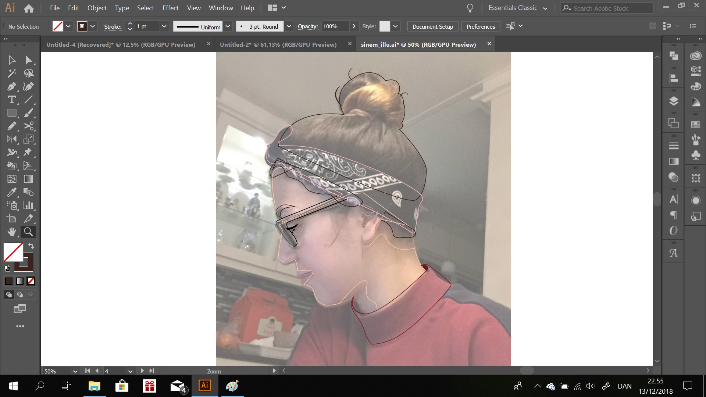

Færdige resultat.
1 / 6

2 / 6
Illustrationen er taget udgangspunkt i et fotografi.
3 / 6

Først startede jeg med at outline mine elementer i billedet alt efter farve, ved brug af pentool.
4 / 6
Elementerne er fyldt ud
5 / 6
Rettet op til ønsket vinkel
6 / 6
Præsentation på 'Arbejde' siden